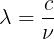
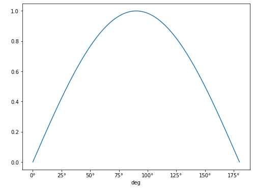

Units and Quantities
Last updated on 2025-04-15 | Edit this page
Overview
Questions
- How can I ensure consistent units in my code?
Objectives
- Creating quantity objects which include values and units
- Applying unit conversions
- Learn about different types of equivalence for units
- Using units for annotating plots
- Test different unit libraries
One of the most common problems in physics and the development of physical models is related to the conversion and management of physical units. Without clear management of physical units, and ensuring that the information passed between different parts of the system is consistent, accidents such as the Mars Climate Orbiter probe crash can occur.
In this lesson we will look at one of the available libraries in python for helping to avoid such problems. This is the units module in the astropy library.
Installing a new python library
Following the conda lesson, we install the astropy library using:
The units module can then be imported in your scripts
using:
Importing as u is not necessary, but it is a common
shorthand for this module, and so we’ll use it below.
Basics
Units can be added to a python variable by multiplying that variable by the unit:
(note the use of US spellings for units).
When printing the variable the unit information will now be attached:
The type of this new variable is an astropy
Quantity:
OUTPUT
astropy.units.quantity.QuantityYou can still access the original object using
value:
OUTPUT
26.2
floatQuantities can be converted to other units, systems or factors, by
using the function to(). For example:
This enables the use of arithmetic operations when quantities have compatible units:
PYTHON
distance_start = 10 * u.mm
distance_end = 23 * u.km
length = distance_end - distance_start
print(length)And it also enables the combining of quantities, for example, to calculate a speed:
By default the units library will select units to report for these values based on what the units are of the objects that you have passed it. You can, as before, convert these to the units of your choice:
You can also convert the units to the base (irreducible) units for
the unit system you are using with the decompose function
(changing the unit system choice will be covered later):
Choosing different base units
If you wish to reduce to different base units you can pass a list of
those units to the bases parameter when calling the
decompose function:
Note that the order of the values in the list passed to
bases parameter doesn’t matter. However, the base units you
choose must be either one of the original units used, or a standard base
unit. This function cannot be used to convert from km to cm, for
example. Instead it is useful where you only want to reduce select units
within the object.
You can change the base system using functions such as
si (to change to the default SI units) and cgs
(to change to centimetre-grams-seconds units):
Reducing more complex quantities
We have been given some (slightly messy) code that calculates the jerk, or rate
of change of acceleration, of a vehicle in the units
m/h/min^2:
PYTHON
acceleration = (25 * u.meter) / (15 * u.minute) / (15 * u.minute)
time_change = 1 * u.hour
jerk = acceleration / time_change
print(jerk)OUTPUT
0.1111111111111111 m / (h min2)For the report we are writing we need to convert this to the units
km/hour^3, which of these changes will do this task for
us?
jerk.decompose(bases=['km','hr'])jerk.to(u.km/u.hour**3)jerk.to(u.km/u.hour**2)
Answer 2 is correct. Decompose will only reduce to base units (or existing units), and so can’t change minutes to hours, or metres to kilometres. Answer 3 won’t work, because we have to apply the modification to all units (including those which are already correct).
Imperial Units
The units library is focused on scientific notation. To
use units from the (US) imperial system we can import the
imperial library:
These can then be used in the same manner as the standard units:
Equivalent Units
There are some unit conversions that would initially appear to be unconvertible. For example, it is possible to convert meters into Hertz. At first glance it seems to be wrong but if you know the quantities for wavelength and frequencies, it is indeed a valid conversion:  where:
- lambda ~ m
- c ~ m/s
- ~ Hz ~ 1/s
This, however, does not work as above:
Instead we need to inform units what unit equivalency we
want it to use, which can be specified with the
equivalencies option:
In this case we use the spectral equivalence library,
which allows conversions between wavelengths, wave number, frequency,
and energy equivalent pairs. There are a number of other built-in
equivalency libraries, for commonly used pairings.
Other built-in equivalencies are:
- Doppler (
dopplr_radio,doppler_optical,doppler_relativistic) - spectral flux density
- temperature
- brightness temperature
- temperature energy
- and you can build your own
Finding equivalencies is possible using the
find_equivalent_units function:
OUTPUT
Primary name | Unit definition | Aliases
[
Bq | 1 / s | becquerel ,
Ci | 3.7e+10 / s | curie ,
Hz | 1 / s | Hertz, hertz ,
]This is a quite limited list - to see what is available for other equivalence libraries, we must specify these when making the request:
OUTPUT
Primary name | Unit definition | Aliases
[
AU | 1.49598e+11 m | au, astronomical_unit ,
Angstrom | 1e-10 m | AA, angstrom ,
Bq | 1 / s | becquerel ,
Ci | 3.7e+10 / s | curie ,
Hz | 1 / s | Hertz, hertz ,
J | kg m2 / s2 | Joule, joule ,
Ry | 2.17987e-18 kg m2 / s2 | rydberg ,
cm | 0.01 m | centimeter ,
eV | 1.60218e-19 kg m2 / s2 | electronvolt ,
earthRad | 6.3781e+06 m | R_earth, Rearth ,
erg | 1e-07 kg m2 / s2 | ,
jupiterRad | 7.1492e+07 m | R_jup, Rjup, R_jupiter, Rjupiter ,
k | 100 / m | Kayser, kayser ,
lyr | 9.46073e+15 m | lightyear ,
m | irreducible | meter ,
micron | 1e-06 m | ,
pc | 3.08568e+16 m | parsec ,
solRad | 6.957e+08 m | R_sun, Rsun ,
]Angles
The numpy trigonometry functions (np.sin,
np.cos, etc) require angles that are passed to them to be
in radians, rather than degrees. It is inconvenient to have to
explicitly convert from other units to radians every time that you wish
to use these functions, but with units you can have this done implicitly
for you.
The radian unit is u.rad, and it’s equivalencies
are:
OUTPUT
Primary name | Unit definition | Aliases
[
arcmin | 0.000290888 rad | arcminute ,
arcsec | 4.84814e-06 rad | arcsecond ,
cycle | 6.28319 rad | cy ,
deg | 0.0174533 rad | degree ,
hourangle | 0.261799 rad | ,
mas | 4.84814e-09 rad | ,
rad | irreducible | radian ,
uas | 4.84814e-12 rad | ,
]We can see from this that the degree unit is u.deg, so
we can use this to define our angles:
PYTHON
angle = 90 * u.deg()
print('angle in degrees: {}; and in radians: {}'.format(angle.value,angle.to(u.rad).value))OUTPUT
angle in degrees: 90.0; and in radians: 1.5707963267948966Now we can pass the angle directly to np.sin without
having to convert directly to radians:
PYTHON
print('sin of 90 degrees is: {}'.format(np.sin(angle)))
print('sin of pi/2 radians is: {}'.format(np.sin(1.57079632)))
print('sin of 90 degrees is not: {}'.format(np.sin(90)))OUTPUT
sin of 90 degrees is: 1.0
sin of pi/2 radians is: 1.0
sin of 90 degrees is not: 0.8939966636005579Plotting Quantities
Support has been added for using the units information in matplotlib
plots. To use this we need to import the quantity_support
library:
We will create a numpy array of the angles between 0-180 degrees, and plot the sin of these:
 Note that the units for the x-axis are properly presented. This can be done for any angular unit we wish:
Temperature
Each of the temperature scales is considered as using an irreducible
unit in standard usage. As a consequence of this we need to always
specify that we are using the u.temperature equivalences
when we convert between these:
PYTHON
t2 = 1 * u.deg_C
print('{} is equivalent to {}'.format(t2,t2.to(imperial.Fahrenheit, equivalencies=u.temperature())))OUTPUT
1.0 deg_C is equivalent to 33.8 deg_FBut, be aware that these are scales, if we wanted to increase a temperature given in Fahrenheit by 1 degree Celsius, we would not add 33.8 degrees Fahrenheit!
To get the incremental value of 1 degree Celsius in Fahrenheit we would need to do this:
PYTHON
t1 = 0 * u.deg_C
t2 = 1 * u.deg_C
print('{} increment is equivalent to a {} increment'.format(
t2 - t1,
t2.to(imperial.Fahrenheit,equivalencies=u.temperature())
- t1.to(imperial.Fahrenheit, equivalencies=u.temperature())
)
)OUTPUT
1.0 deg_C increment is equivalent to a 1.7999999999999972 deg_F incrementThis is verging on unreadable (as is demonstrated by us having to split a simple arithmetic expression involving two variables across two lines of code).
Fortunately there is support for cleaner temperature conversions in
the pint
package. This has similar functionality to the astropy.unit
package, but has been built from the ground up with a focus on different
aspects. These include unit parsing and standalone unit definitions,
uncertainties integration, and (important for our example here), cleaner
treatment of temperature units.
Pint can be installed using conda (and the conda-forge channel):
The unit registry is loaded using:
A units definition file could be given here if needed, but in this case we will stick with the default settings.
This library has the temperature units as before:
OUTPUT
1 degree_Celsius is equivalent to 33.79999999999993 degree_FahrenheitBut it also includes the concept of temperature increments:
PYTHON
deltaT = 1 * ureg.delta_degC
print('{} is equivalent to {}'.format(deltaT,deltaT.to(ureg.delta_degF)))OUTPUT
1 delta_degree_Celsius is equivalent to 1.7999999999999998 delta_degree_FahrenheitBecause of the popularity of python this overlap of functionality of packages can be common. We would recommend exploring the different available packages that might cover your requirements before settling on one. And keep watching out for new packages, and be prepared to switch when starting new projects if/when you find better packages.
Key Points
-
astropy.unitslibrary provides unit support -
Quantityobjects are created by multiplying values by the desired units - The
.to()function can be used to convert units - The
.decompose()function can be used to convert to the base (irreducible) units - Equivalences can be found using the
.find_equivalent_units()function - Specific equivalence libraries can be defined using the
equivalences=keyword - Import quantity-support from
astropy.visualizationto integrate units with matplotlib for data plotting - The
pintlibrary provides similar unit support, but is better for working with temperature increments